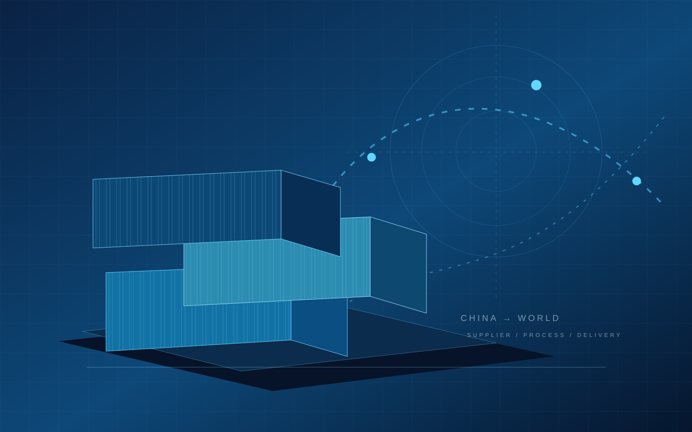

Производственные решения
Машины, узлы, линии и профильные производственные позиции.
Поиск поставщиков и товаров в Китае под требования бизнеса. От первичного запроса до согласования параметров и условий.
Подбираем направления, производителей и товарные варианты, отталкиваясь от параметров запроса, а не от хаотичного списка компаний.
Машины, узлы, линии и профильные производственные позиции.
Продуктовые категории и товары под конкретную задачу бизнеса.
Сравнение вариантов по параметрам, формату работы и документам.
Проверяем, что можно уточнить до перехода к дальнейшему этапу закупки.
Начинаем с задачи, а не с длинного списка случайных компаний. Помогаем сформулировать требования и разобраться в предложениях производителей.

CHINA → RUSSIA / BUSINESS SOURCINGКак может выглядеть результат первичного поиска: сопоставимые поля, уточнения и зоны риска. Ни один из примеров ниже не является реальным поставщиком DARKHANTECH.
| Критерий | Производитель A | Производитель B | Производитель C |
|---|---|---|---|
| Профиль | Фасовочные машины | Сборные линии | Упаковка |
| Техническое ТЗ | Уточняется | Уточняется | Нужны параметры |
| Фото / видео | Запросить испытание | Каталог и видео | Видео по запросу |
| Документация | Проверить | Проверить | Проверить |
| Стоимость и условия | После спецификации | После спецификации | После спецификации |
Фиксируем, что именно ищем, какой объём и какие требования критичны.
Подбираем релевантные варианты под ваш сценарий и формат закупки.
Уточняем информацию, спецификации, документы и доступные подтверждения.
Обсуждаем вопросы с производителями и проясняем рабочие условия.
Определяем следующий этап сделки или закупки с учётом вашего запроса.
Даже на этапе первичного поиска важно понимать, с кем вы разговариваете и какие данные действительно подтверждены.
Сужаем поле до тех вариантов, которые соответствуют вашей задаче.
Помогаем сопоставить предложения и ключевые параметры.
Собираем сведения, которые нужны для более осознанного выбора.
После первичного поиска проще двигаться к обсуждению закупки и поставки.
Опишите товар или прикрепите параметры в будущем рабочем запросе. Для первого обсуждения достаточно основных требований и предполагаемого объёма.
Демонстрационная форма макета. Контакты и отправку заявки подключим после согласования.